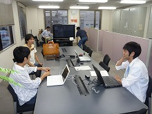
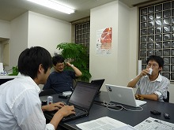
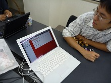

Rubyist Hotlinks 【第 23 回】 yhara さん
はじめに
著名な Rubyist にインタビューを行う企画「Rubyist Hotlinks」。 今回は RubyStation や Ruby/SDL スターターキット の作者である yhara さんにお話を伺いました。お楽しみください。
プロフィール
 KMC( 京大マイコンクラブ ) 出身で、現在は ネットワーク応用通信研究所 (NaCl) で仕事をされている yhara さん。Ruby 外では BiwaScheme の作者でもある。趣味はサイクリング、ピアノ。代表著作は『Ruby で作る奇妙なプログラミング言語』。
KMC( 京大マイコンクラブ ) 出身で、現在は ネットワーク応用通信研究所 (NaCl) で仕事をされている yhara さん。Ruby 外では BiwaScheme の作者でもある。趣味はサイクリング、ピアノ。代表著作は『Ruby で作る奇妙なプログラミング言語』。
- 好きな言葉
- 日によって違う。インタビューの日は「始めるのは簡単だが終わるのは難しい」
- 尊敬する人
- 自分よりたくさんコードを書く人
- ご本人のサイト
- Route477.net
インタビュー
- 聞き手
- ささだ
- 語り手
- yhara さん
- 野次馬
- まつもとさん、前田修吾さん、nariさん
- 日にち
- 2009 年 9 月 16 日
- 場 所
- NaCl
目次
プロフィール
ささだ 今日はお忙しいところ、ありがとうございます。
yhara よろしくおねがいします。
ささだ よろしくお願いします、yhara 先生。なんか、先生ってつけますよね？
前田 名字が原だから。
yhara そこからの類推！1
ささだ (笑)。会社の中では、yhara 先生って言わない？
前田 いやいや (笑)
ささだ なんて言うんですか？
前田 「原くん」。「原くん」という呼び方以外は無いよね。
生年月日、出身地、現住所、家族構成
ささだ 生年月日、出身地、現住所、家族構成。
前田 そんな質問ありましたっけ？
ささだ 現住所？ まあ、言える範囲で。
yhara えっと、83 年生まれの 25 歳です。
ささだ 25 歳。
yhara 松江市在住です。
ささだ 松江市在住。家族構成は？今は 1 人暮らし？
yhara 1 人暮らしです。
好きな言葉、座右の銘
ささだ 好きな言葉、座右の銘。
yhara 座右の銘、日によって違うんですけど……
ささだ 日によって違う？ 今日は？
yhara 今日はいい言葉を見つけて。「始めるのは簡単だが終わるのは難しい。」
ささだ なんか終わるのが難しい話があるんですか？
yhara 手を広げすぎると完成しない。
ささだ なんか実際にそういうのがあったんですか？
yhara いや、趣味のプロジェクトとかですね。
ささだ どのプロジェクト？
yhara いや、それは後じゃないですか？
ささだ 後で (笑)。わかりました。
尊敬する人
ささだ 尊敬する人。
yhara 尊敬する人はですね、自分よりコードを書いてる人ですね。
ささだ 自分よりコードを書く人。たとえば？
yhara でも、最近はコードを書くようになったので閾値は上がってますね、前よりは。
ささだ つまりコードを書かない人には用はありません、と言うこと？
yhara 深読みしないで下さい (笑)
ささだ たとえば？
yhara _why 先生とかね。でもあんなことになっちゃいました。2
nari あんなこと！
代表作
ささだ 代表作。
yhara 代表作は、BiwaScheme 3 ですかね。Ruby じゃ無いんですけど。
ささだ (笑)
yhara えーっと、Ruby/SDL スターターキットっていうのがあって。あと、本があります。「Ruby で作る奇妙なプログラミング言語」。
ささだ 著作ですね。1 冊だけでしたっけ？
yhara 1 冊だけですね。今、2 冊目を書いてる。
ささだ なにやるんですか？ まだ内緒？
yhara スクレイピング関係で。Mechanize4 と Nokogiri5 とかですね。
ささだ Mechanize と Nokogiri の本を書く。Mechanize と Nokogiri をどう作るか？
yhara おー、そっちに行きますか (笑)。あとはですね、RubyKaigi でしゃべった RubyStation 6 ってのがあって、うまくいけばあれが代表作になるんじゃないですか？
ささだ RubyStation の話は後でしようか？ さっきの終わるのがどうしようかって言うのは RubyStation のこと？
yhara も、そうですね。
ささだ も？
yhara ま、それは後で (笑)
好きなメソッド、嫌いなメソッド
ささだ 好きなメソッド、嫌いなメソッド。
yhara 好きなメソッドは Enumerable。メソッドじゃないですけど。
ささだ Enumerable の何が好きですか？
yhara あれが一番 Ruby らしいと思うんですよね。
ささだ Ruby らしい。Ruby らしさがいい？
前田 collect と map はどっちが Ruby らしいんですか？
yhara 両方あるところが Ruby らしい。
ささだ あ、俺もそう思う。
yhara map 派ですけどね。
ささだ ですよね。
yhara 短いしね。
まつもと 短いから (笑)
ささだ 嫌いなメソッドは？
yhara 嫌いなメソッドは特にないんですけど、(Rubyの組み込みクラスの一部仕様は) Unix に結構寄ってるので、それで違和感のあるメソッドが。tr とかですね。何するんだろう？って。
ささだ tr って何の略なんですか？
前田 何の略なんでしょうね？
yhara えーっとですね、調べたんだけど……。translate。
ささだ なるほど、ちゃんと translate って書けよって？
yhara (笑)。いや、そもそも要るのかっていうのは若干疑問はあるんですけど。
ささだ 時々使いますよね？
yhara 使います？
ささだ うん。
前田 sub はいいの？
yhara sub は……、sub は慣れました。
ささだ sub は substring で。てか、gsub って、よくわかんないんですよね。gsub って全然わかんなくて。global ですよね、あれ？
yhara まあ、vim で //g とかつけるんで。あと、File クラスとかも、若干、Unix 寄ってますよね。
ささだ 私は、open のモードの後ろにパーミッションとかつけられるじゃないですか。あれが全然わかんなくて、最初。
yhara パーミッションも難しいですよね。
ささだ あれ、パーミッションつけられるんじゃなかったでしたっけ？
nari (笑)
ささだ すいません、つけられないか。
yhara だれも仕様を把握していない。
前田 あれ？つけられませんでしたっけ？
ささだ 1.8 のマニュアルを見てるんだけど……。あ、いけますいけます、大丈夫でした。だから Unix じゃないよ、Ruby はって言いますけど、Unix ですよね、これ。
前田 まつもとさんが Unix 好きなので仕方ないんじゃないですか？
まつもと ん？ 僕は Unix 好きだよ、確かに。
ささだ まつもとさんが Unix が好きなのが嫌いだそうです。
yhara 最初触った時に Windows しか持ってなかったんで。その辺が、時間がかかりましたね。今は慣れてしまったんで、もう初心を忘れてしまいましたけど。
Ruby に関して
Rubyist になったきっかけ
ささだ 次、Rubyist になったきっかけ。
yhara えっと、高 3 の時に、C Magazine でスクリプト言語特集がありまして。
ささだ C マガですか！ 懐かしいですね。
前田 それ何年くらいなの？
yhara えーっと、2001 年ですね。
ささだ 2001 年。C マガ買ってた気がします。
yhara 惜しい雑誌を亡くしましたね、われわれは。
まつもと 惜しい雑誌を亡くした (笑)
ささだ 高 3 の頃にそもそもプログラミングをしていた？
yhara そうですね。それはもっと後の方で。
ささだ じゃあ、後でその辺の話も (笑)。で、スクリプト言語特集で Ruby を知って、Ruby いいじゃないかと。
yhara そうです。なんか guile とか Lua とか、pike とか。
ささだ それを特集でやってた？
まつもと Lua とかすっごく新しい気がするんだけど。
yhara Lua、ありましたよ。ウソかな？
まつもと いや、あったと思うよ。(僕は) すごく新しい、の基準が間違ってるから (笑)。
現在の Ruby との付き合い
ささだ 現在の Ruby との付き合い。
yhara えーっと、たとえば？
ささだ 仕事で使ってたり、仕事で仕様を書いてたり (笑)
yhara 仕事で仕様を書いてたり (笑) 7
まつもと 大変だなー。
ささだ 今は？ 仕事でも Ruby を書いてるの？
yhara あの、実はまだ…… JavaScript のガワを担当とかで、Ruby を本格的に使ったことは実は無いです。
前田 あ、そうか。まだ Ruby を使った仕事ないんだ。
yhara Rails わかんないです。
まつもと Rails わかんないよね。
yhara 中村くんの方が詳しいです。
nari いやいや (笑)
ささだ なるほど。
前田 そうか、クライアントサイドしかやってないのか。
yhara あの時はそうですね。サーバーサイドは Ruby でしたが。
Ruby の好きなところ、嫌いなところ
ささだ Ruby の好きなところ、嫌いなところ。いろいろありそうですね。
yhara (笑)。どういう意味ですか？
ささだ 好きなところはちゃっちゃといきましょう。
yhara 好きなところはですね、少ないルールで多くのことを表すのがいいなと。
前田 「少ないルールで」？
ささだ ルールがどこにもないとかって話じゃなくて (笑)
まつもと ルール無用のなんとかってやつですか？
- yhara えーと、boxingが無い（全部がオブジェクトである）とか。
- 
前田 ピュアなオブジェクト指向なのが素晴らしい……、という話でもないの？
yhara 実はそんなにオブジェクト指向には感慨が無いんですけど。8
ささだ あれを少ないルールっていうのはすごいですね。
yhara なんか語弊があるかもしれないですね。少ない種類のルール。量じゃなくて (笑)
ささだ (笑)。種類は少ないが量は多いと。あー、っていうか Ruby は例外が多いんですよね。だからプリンシプルとしてはシンプルなんだけど。
前田 ベースとなるモデルはシンプルな気はしますね。
yhara トップレベルでメソッドを定義すると main に定義されるとか。
ささだ なるほど。じゃ、嫌いなところは？
yhara 嫌いなところ……。嫌いだったら使ってないっていう話なんですけどね。9
ささだ おー。
前田 すべてが好き？
ささだ あの仕様をまとめても好きだったってのはすごいですよね。
yhara 仕様はですね、あきらかに地雷なところは外してるので (笑) 10
ささだ なるほど。地雷のところは見なかったことにしている。だから、嫌いなところも見なかったことにしている。
yhara 見なかった。
全員 (笑)
前田 じゃあ、ローカル変数のスコープとかはあんまり嫌いじゃない？
yhara あんまり困ったことは……。まあ、自分が困らなければいいってところはあるかもしれないですね (笑)。ユーザとしては。
ささだ なるほど。じゃあ、変数のスコープなんか気にする人はごく少数だということですね。っていうか研究者は嫌いって言うか。
まつもと 研究者は嫌いだろうね。
yhara Ruby 的にはそういう思想がありそうな気もしますね。多重代入とかもそうですけど、よく使う部分がいい感じに動けば細部は気にしないみたいな。
ささだ なるほど。「いい感じ」っていうのがすごいですよね。
yhara 地雷を踏むまではいい感じに使える。
前田 それなんかさ、これから仕事で Ruby をどんどん使うと考え方が変わったりするかもしれない (笑)
全員 (笑)
ささだ じゃあ、前田さんは変わったってことですか？
前田 いや、どうなんだろ。自分ひとりで書いてるのと、仕事でいろんな人の書くコードの折り合いをつけながら書くのってちょっと違うかもしれない。
ささだ あー、なるほど。他の人の書く Ruby のコードは嫌いだと。
前田 いや、そうじゃなくて。自分が決まった書き方しかしてないと、まあ、あんまり地雷に当たらないわけじゃないですか。
ささだ なるほど、地雷を避けて書く書き方がもう身についてるので。
前田 もうその範囲でしかコーディングしないと。
yhara 良く訓練された Rubyist であると。
全員 (笑)
Ruby を使った成功事例
__ささだ__次、Ruby を使って成功した事例は何かありますか。
yhara 事例ってどういうのを言うんでしたっけ？
ささだ なんかこういうアプリケーションを書いてたら Ruby でよかったとか。でも質問があいまいですね。他のに比べて Ruby でよかったなとかそんな話。
前田 Ruby のおかげで本が売れたとか。
まつもと おお、それだ。Ruby をやってて本を出せました。他の言語ならきっとその本は出なかったに違いない。
ささだ 別に『Python で書く奇妙な言語』でも良かったんですよね？
yhara どうなんですかね？
前田 いや、でもそこは Ruby でよかったって言っとくとこじゃないの？
yhara コードが短い方が、説明を本質的なところに注力できるのでいいですね、ということは言えますけど。言えますけど、それ Python でも同じじゃないのって言われたら (笑)。やっぱり何か作る時に Ruby が一番早いんですよね。慣れてるので。慣れててライブラリもいろいろあるので。
ささだ あ、いいかんじですね。インタビュー的に。Ruby を使うとハッピーになれると。でも正直 Python の方が多いんじゃないですか？ ライブラリとか。
yhara そうなんですかね？
ささだ マニュアルがあるかどうかとかは知らないけど。
前田 言語の処理系をつくるとかだったら、なんかそんなに Ruby とかでもあんまりかわんない気が。
Ruby のキラーアプリケーション
ささだ これは自分にとってキラーアプリとかキラーライブラリとかそんなのはありましたか？
yhara これ考えたんですけど、RubyGems を挙げたいなと。
ささだ RubyGems。gems はキラーアプリ？
yhara gem があるので、いろんなおもちゃを試して遊びやすい。
ささだ Perl の人だと CPAN とかいうじゃないですか？
yhara そうですね。そういう立場。
ささだ Perl とかは、やらなかったんですか？
yhara Perl は難しいですよね。
ささだ 難しそうですよね。や、なんか Perl の方が CPAN たくさんあるしとか。
前田 なんでマイナスな発言を引き出そうとしてるんですか (笑)
yhara Perl はすごい多いですよね。でも粒度が小さいですね、CPAN のライブラリ。
ささだ gems だとおっきいんですか？
前田 Ruby ぐらいがちょうどいいんだ。量的に。
yhara うん、Ruby くらいの粒度の方が好きですけどね。
まつもと 粒度と量はまた違うな。
ささだ なんか、gems って使ったこと無いんだけど。
yhara おお、なんと。
まつもと 僕もあんまないな。
ささだ gems てか、Ruby もあんま使わないからわかんないんだけど。11
yhara (笑)。分かりました。
ささだ gems のライブラリを探すってどうやるんですか？
yhara 探す時は、今 Ruby Toolbox12 というサイトがあって。
nari これいいっすよね。
yhara ここを見ると、だいたい最近話題になってるのは載ってますね。で、あと、どれが実際に使われているのかというのが出るので。
ささだ なるほど。人が使ってるのはきっといいだろって感じ？
yhara 人が使ってるやつはメンテされてるだろとか。
ささだ なるほど。
前田 メンテナー次第じゃない？
ささだ most popular とか書いてあるんですけどこのカウントはどうやって？
yhara 多分 GitHub 13 の watcher とか fork されてるとかでカウントしてるんで、GitHub に乗ってないやつは、考慮する必要はありますけど。
ささだ 検索はあるの？
yhara 検索はないですね。
ささだ でもこれ検索しないと意味なくない？
nari カテゴリから。
ささだ あー、なるほど。
前田 検索しなくても、見れるくらいの量だから好きなの？ (笑)
Ruby の習得
ささだ Ruby の習得は簡単でしたか？
yhara えーっと、C マガで概要を見て、その後 Web で 1.6 かな？ 1.4 かな？ の、リファレンスを見て学びました。14
前田 まつもとさんが書いた……
ささだ まつもとさんが書いたやつはなんかほんとにシンプルなやつだったような。
まつもと 何で書いたっけ？ もう忘れちゃった。HTML じゃないと思うな。RD15 かな？
ささだ まつもとさん、いま RD とか書いてるんですか？
まつもと 一応、僕の毎月書いてる原稿は .rd って拡張子で書いてる。
全員 おおー。
まつもと あと、最近書いてない Matz 日記 は RD で書いてます。
ささだ RD は Ruby 標準仕様案に入るんですか？
前田 いやいやいや (笑)
全員 (笑)
yhara まず、標準添付しないと。
ささだ あ、そうか、いま RD で書く (Ruby 付属の) 文書って無いか。標準添付ライブラリの一部は RD で書いてあるかもしれない。
前田 いや、ないんじゃないですか？
yhara るりま も違いますからね。
前田 Wiki でしか使わないかも。
nari 本の原稿は RD で書いてます、僕。
ささだ おっ。青木さんのやつ？
nari ReVIEWで。
ささだ あれいいよね。
nari あれいいですね。16
yhara RD 割と好きだったんですけどね。今は、HikiDoc17 の方がずっと多くて、書くのは。日記とか Wiki はそうですね。
ささだ へぇー、なるほど。
プログラミング全般
初めてのプログラミング
ささだ じゃ、次。プログラミング全般の話で。初めてコードを書いたのはいつくらいですか？
yhara えーっと、Ruby じゃなくてですか？
ささだ うん。
yhara 中学の時に科学部という部活があってですね。実態はコンピュータ部で、先輩に C 言語を書ける人がいて習いました。
ささだ C で何書くの？
yhara printf。
ささだ いやいやいや (笑)
yhara printf で Hello World しました (笑)
ささだ え、そんだけ？
yhara 中学の時は……うーんと、ゲームを主に作ってましてですね。PC-9801 だから master.lib 18 ですね。Down!! というゲームを作って、文化祭に出しました。
ささだ ダウンロードできるんですか？どっかに上がっている？
yhara 「down」で検索すると 3 番目ですね今。びっくりだな。
まつもと そんな一般的な単語なのに？
yhara 「down」で 3 番目ですね、今。19
まつもと ほんとだ。
yhara これは Ruby/SDL で作り直したバージョンなんですけど。20
ささだ すごい。printf からなんかすごく飛びましたけど。まあ、それをやったと。
yhara いろいろあって簡単なゲームが作れるくらいまでなりましたみたいな。中学の時はずっと C でしたね。C しかなかったですね。まあ、アセンブラにいくという手はあったんですけどそこまでの知識は無かったですね。
ささだ なるほど。えっと、Ruby 以外のプログラミング言語では何を使いますか？
yhara で、高校に入って Windows でそこで Java に行ったんですよ。
まつもと すばらしい。
yhara Applet がやりたくて。21 で、それはあんまりうまくいかなくて。その後 HSP に行きました。
ささだ HSP？ それはうまくいった？
yhara うーん……、うまくいったのかな？ それは結構触ってましたね。実は C と連携とかできるんですよ。C で拡張ライブラリとか書ける。
ささだ そりゃそうだろなぁ。で、それを書いてた？
yhara ちょっとだけ。まあ、公開できるようなものは作らなかったですけど。22 で、高 3 の時に Ruby に出会った。
ささだ なるほど。で、あとは Ruby？
yhara あとは Ruby ですね。で、大学に入って 4 年生の時に卒論のために Scheme を覚えましたね。JavaScript で Scheme をやるというテーマで。
ささだ 修論の BiwaScheme の話って、卒論でやった Scheme の処理系の話に TupleSpace を付けましたっていう？
yhara だいたいそんな感じです。
Ruby 以外のプログラミング言語
ささだ Ruby 以外のプログラミング言語では何を使いますか？何が好きですか？今、何を使ってますか？
yhara 今書いてるのは、JavaScript を BiwaScheme のために書いてて、Scheme を BiwaScheme のテストのために書いてる。
まつもと (笑)
前田 (笑)
ささだ え、BiwaScheme って今でもやってんの？
yhara ぼちぼち続けてますね。
ささだ これで使いたいとか、こうしてほしいって言う要望とかも来るんですか？
yhara なんか、バグレポートとか最近来るようになって。たまーに。
ささだ おぉ。なるほど。どの辺の人から来るんですか？ 趣味で使ってる人……、あんまり趣味以外では使わないか。
yhara いや、1 件、社内のツールを作るために使いますって言う人がいて。責任重大だなと。いや、責任重大でもないな。責任を取る気があるみたいに聞こえましたね。
全員 (笑)
yhara no warranty ですよ。23
まつもと そんな気は無いんですが、要求されるような気がなんとなくします。
yhara MIT License ですから。
Ruby 以外で好きな言語
ささだ えっと、Ruby 以外で好きな言語。
yhara 好きな言語かぁ。
まつもと 変な言語言っとくといいよ。
yhara Befunge 24 ですか？
ささだ Befunge 好きなの？
yhara Befunge、割と好きですよ。あれは。楽しいですからね。
ささだ へぇー。
yhara まあ、でもあまり大きなものは書いてないですから。
ささだ そりゃ、大きなものは書けないよね (笑)
まつもと Befunge で大きなものを書くやつの顔が見てみたい (笑)
yhara mame さんみたいにね、Wiki を書くとかしないと。
ささだ Wiki を書いてたんだ。
yhara Lisp25 は割と好きですね。書いてて楽しいんで。
ささだ Lisp でゲーム作んないの？
yhara うーん、そうですね。ちゃんと…… あの、多分ですね、Lisp の真髄はマクロなんですよ。
まつもと Lisp の真髄はマクロ。
yhara だからマクロを使いこなせるようにならないと、真に Lisp いいよねとは言えなくて、Lisp は素晴らしいと言うためには、マクロの真髄を掴まないといけないと思うんです。
ささだ はいはいはい、なるほど。
まつもと マクロねぇ。
yhara で、マクロが役に立つためにはある程度の規模にならないといけないはずで、今のところはそこまで到達はしないですね。多分一番大きな Scheme のコードは今プレゼンツールを BiwaScheme で書いてるので、それのコードは一番大きいんですけど。 まだ数百行なんでそんなに大きくは無いですね。
ささだ なるほど。
美しいソースコード
ささだ 次、いままで読んだ中でもっとも美しいコードは何ですか？
yhara あんまり、ソースで美しいとか思うことは無かったんですけど、Gauche の本 26 が出ましたよね。あれの時に Scheme で HTTP サーバを作るって言う話があって、ドラフトのコードをどっかのチャットに貼ってらしたんですけど、それが綺麗だなと思いました。27

ささだ うん。
yhara 自分でも、修論のために書いてたんですよ。28 HTTP サーバを。すごく小さいのなんですけど。それと比べると全然違うなと。
ささだ あー、なるほど。shiro さん29が書いたやつ？
yhara そうです。プログラムの美しさってのを意識しましたね。その時に。
ささだ なるほど。世の中に美しいソフトウェアがあるんだと。
yhara 美しいソフトウェアとはこういうものなのか、と。美しいプログラムですね、ソフトウェアじゃなくて。あの、関数が適度な大きさで区切られてて、それの組み合わせになってるみたいな。
ささだ 私が書くと、なんかでかーい関数に、内部関数がたくさんバカスカあって、なんかそんな書き方になっちゃって美しくないんだよね。
yhara それでもいいと思うんですけどね。内部関数が十分小さければ。
ささだ その辺がうまく書けないなーって、Lisp で。まあ、Ruby でも書けないんだけど。
yhara Lisp の良いプログラムを書くのは、慣れが必要なんですよ。
まつもと そうだね。
yhara 書き始めてから汚くなってしまって。Ruby だとなんかそんなにひどくならない気がしてるんですけど。 どうでしょう。なぜなんですかね？
ささだ なんか Lisp だとほんと油断してるとどんどん深くなっちゃうけど、Ruby だと平べったいって言うか。逆にそれは表現力が無いだけなんじゃないかって気がしないでもないんですが。
yhara いや、Ruby だって深くはできますよね。
まつもと やろうと思えばね。
ささだ うーんと、一番平べったいのって、C みたいに関数とかたくさん作るって感じだけど。で、それが表現力があるかって言うとまた違うので。だから、平べったくと言うか深くならないようにする圧力が何かあるような気がしないでもないですけど。
yhara とりあえず class 式で一段強制的にネストして、def でもう一段強制的に区切られますよね。
ささだ 何でなんですか？ まつもと先生。
まつもと あんまりネストしないから。メソッドのネストは許されないし。
ささだ いや、許してるじゃないですか。30
まつもと いや、まあ実用的には許されないし。
ささだ (笑)
yhara ひどい発言が (笑)
まつもと 使いものになんないんだよね、あの仕様ね。
yhara あれ JavaScript 的なセマンティクス31になることは無いんですか？
まつもと うーんと、笹田くんとは RubyWorld Conference の時に話したんけど、ネームスペースの問題があって、適切な意味づけをするのが難しいんじゃないかなと。
yhara あー。
まつもと たとえばネストしたメソッドになにか意味をつけるとしたら、それは多分、そのスコープでだけ有効なメソッドを導入するっていうことだよね。
yhara 「ネストしたメソッド」になってしまうんですね。「ネストした関数」でなくて。
まつもと うん、まあ「ネストした関数」でもいいんだけど、でも Ruby にいま「関数」は無い。
yhara 無いですね。
まつもと だから、「関数」って言う新しいものを導入するって形になってしまう、のかな？
yhara 「ネストしたメソッド」っていうのは、なんか不自然な雰囲気がしますね。
まつもと メソッドの中で def を定義した時に何が定義されるかって言う時に、もしそれがメソッドであるとすれば、どっかのオブジェクトに属してないとダメだよね。で、そのスコープにいる時だけ存在するメソッドって何なんだろうって。
ささだ Argument オブジェクトとか作ってとかなんとか、ってなるかもしれませんね。
まつもと でもそれレシーバじゃないからね。「レシーバを省略すると self に行く」っていうルールと違うものを導入しないといけないことになるんだよね。
ささだ そうそう。
yhara すごく納得したのでもういいです。僕はもうその主張はしないことにします。
まつもと (笑)
ささだ 私もそれ言われて、なるほどって思った。
まつもと みんななるほどって言うでしょ。で、唯一、もしかしたら意味があるかもしれないって思う仕様が、メソッドの中で def やったら self に Singleton メソッドを追加する。
ささだ スコープの中でだけ？
まつもと ううん、全体に (笑)
ささだ そのメソッドから出た時には残っちゃう？
まつもと 残っちゃう。
ささだ なるほど、今とあんまり変わんないですね。
まつもと うん。でも、今はもうちょっと広いから。今よりは狭いって言う。もしかしたらこれなら意味があるかもって思ったんだけど。
ささだ そうそう。だから私としては、メソッド内 def を Proc のシンタックスシュガーにしてほしかった。lambda 式で変数にバインドして、そのメソッド呼び出しは「変数.call」だってするとどうかなあと思ったんですけど。
yhara そう、Proc にした時に気になるのは、カッコなんですよね。33だから、それがいらないようなシンタックスシュガーだといいかもしれないですけど。ただ、それを def っていう同じキーワードにするのは違和感がありますよね。
ささだ なるほど。
yhara function？ lambda？ fn？
ささだ fun とか。なにが好きですかって感じですね。function いいかもね。
yhara 関数ですね、まさに。
今興味を持ってるテーマ
ささだ 興味を持ってるテーマ。
yhara テーマ？ うーん、何でしょう？ 今は、 RubyStation で、デスクトップアプリケーションを Web アプリの技術で作る、みたいな。実際にいくつかアプリケーションを作って、使ってますが、割と良いなあと。ウィンドウが増えないので。
ささだ タブでいけるってこと？
yhara ブラウザは常に立ち上げてるので。いま、家計簿ソフトを自作しようとしてて。
ささだ これ、裏で webrick34 とか動いてるの？
yhara そうですね。いや、mongrel35 かもしんない。
- ささだ (画面の写真を撮る)

yhara これ撮ると家計が……
ささだ あ、遠くから撮るから、見えない見えない。
yhara 漫画を買ったのがばれる。
ささだ 漫画を買ったのがばれる (笑)。つか、こんなに細かく入れてるんだ。カレー粉とか書いてある。
yhara レシート単位でつけてるだけです。Google ドキュメントでつけてたんですけど、ある日突然、僕の環境でうまく開けなくなる事件があって、依存するのはダメだと思って (笑)
まつもと 外のものをあまり信じちゃいけないんだ。
nari 原さんに薦められてからずーっと Google ドキュメントで家計簿つけてます。
yhara ちゃんと動いてる？
nari 動いてます。
yhara で、また最近変更が入って、Opera だと簡易 HTML モードにしかできないようになってて、「もう！」って。
nari (笑)
ささだ やっぱり Excel でやらなきゃとかそんな感じ？
yhara Excel だといちいち起動しなきゃなんないのでめんどい。ブラウザはずっと開いてるので、そこの 1 窓に家計簿ソフトがあるといいなと。
ささだ でも家計簿ソフトの Web アプリケーションはずっとローカルで起動してないとダメなんですよね？
yhara ああ、それは、そうです。
ささだ あ、マシン起動するごとにもうずっと立ち上げちゃうんだ。
yhara 今こんな感じになってて。ここは撮ってもいいです。いま 2 つ (アプリを) 起動しました。
ささだ これで選ぶの？
yhara で、ON をクリックするとアプリの画面が出ます。で、メモリを空けたい時は OFF にすれば。
ささだ なるほど。だから RubyStation ってことですね。でもこれは今年の 1 月にも聞いた気がするな (笑)
yhara そうですね。で、8 月に RubyKaigi で。そろそろリリースをしたい。
nari あれ、まだリリースしてないんでしたっけ？
yhara してないですね。36
ささだ では、デスクトップ用のアプリケーションをどう作るのかって言うところに興味があると。
yhara そうですね。基本的に、自分の身近なところに興味が。
ささだ 大事大事。なんか GUI フレームワークを Ruby から使うとかじゃなくて、もうブラウザでいいじゃんと。
yhara Web アプリの作り方なら分かってるので。
ささだ なるほど。最近思うんだけどさ、Firefox の XUL とかその辺とのバインディングを作ったらなんか一番マルチプラットフォームじゃね、とか思ってるんですけど。
yhara ほう。まず Firefox 使わないとダメですね。
ささだ あ、FireFox じゃないの、いま？
yhara いま、Operaがメインです。デフォルトの状態で結構使いやすいのがいいところです。
ささだ Google Chrome とかにいかないんですか？
yhara Chrome はまだ Mac で正式版が出てないので。37
ささだ あー。マカーか。
yhara Chrome は BiwaScheme がすごく速く走るので、期待してます。
ささだ V838 が速いってことね。
yhara もう倍くらい速くて。びっくりですよね。ちゃんと実装してるのかって。
まつもと (笑)
ささだ (笑)
yhara たまにすごい速い Ruby を実装しましたって言って、String が immutable だったりとかありますよね。39
ささだ あー、いいですね (笑)
まつもと いいですね、じゃないって (笑)
全員 (笑)
生い立ち
生い立ちについて
ささだ じゃ、次。生い立ち。
まつもと なんかプログラミング関係の生い立ちはみんな聞いちゃったんじゃない？
ささだ 聞いた気がしますね。
yhara 中学、高校の話はしましたね。小学校の頃は工作クラブでしたよ。
まつもと 原くんの世代ってコンピュータ室とかってあった？ 学校に。
yhara コンピュータ室はあったかな？ 中学の時にはあったんですけど。 小学校はわかんないです。
ささだ 私の時期にも、もうありましたよ。
まつもと そうなんだ。
ささだ PC-9801 がありました。
yhara PC-9801FS でしたよ、中学校の頃は。
まつもと 自分の子が学校に行くようになってパソコン室があって驚愕したんだよ。
ささだ 最近、クラスに 1 台あるらしいですね。
nari へぇー。
まつもと すごい時代だな。
yhara 最初に触った……、物理的に接触したコンピュータは PC-8801 ですね。家にあって。それはゲームをしただけですね。1 回、BASIC を写経するという体験をしましたが、「あー、動いた」というくらいで。
ささだ それはいつ頃なんですか？
yhara 小 6 とか小 5 とかじゃないですか。ほとんどゲーム機でしたね、あれは。
ささだ で、中学で運動とかはほとんどしない感じでした？
yhara 科学部ですからね。
ささだ 高校は何部だったんですか？
yhara 図書委員でしたね。
ささだ 部じゃないじゃん。図書委員で、なんだろ、ゲーム作ってたの？
yhara いや、そういうわけでも。
ささだ じゃあ、高校の頃はコンピュータ触んなかったの？
yhara そうですね。C マガを読んでましたね、家で。高校にコンピュータークラブがなかったんですよね。悲しいことに。
ささだ 高校の思い出的なものは？なんかあれば。
yhara 部活やってなかったのでね、思い出はあんまりないですね。一言でいえるほどの思い出が。
ささだ なんかいろいろやってたの？
yhara 立ち読みとか。
ささだ 立ち読みとか (笑)
yhara 週 2 とかで本屋に行ってた気がしますね。
全員 (笑)
yhara 大学の時は KMC 40 というコンピュータークラブと、サイクリング部をかけもちしていました。
ささだ KMC とサイクリング部を大学から？
yhara 高校の時の反省があったわけですよ。
ささだ 何もやらんのはいかんと？ KMC は KMC だとわかってて入ったんですか? なんかこう、伝統ある怖い人たちの集まりみたいな。41
yhara えっとですねー、入学前に HP をみたら、大林さんの名前があって。42 で、C マガに SDL 特集があって、 Ruby/SDL が載っていたので、おー、雑誌に記事を書く人がいるのか！みたいな。
ささだ 入ってみたら、もっとすごいことになって？ (笑)
yhara すごいとこですねー (笑)
まつもと KMC だからなー。
yhara PC98 に Linux を移植したプロジェクトとかですね。
nari おー。
まつもと HP ラボから Google に行った人とか。同じ人だ (笑)
ささだ (笑)
yhara いや、違いますよ。鵜飼さんは 386BSD を移植するプロジェクトです。
- まつもと ああ、そうか。
ささだ 時間のかけ方とかは、どうだったんですか？ サイクリング部の方が実は多いとか？
yhara いや、半々ぐらいの比重だったんですけど。
ささだ サイクリング部と掛け持ちできるってすごいですね。
yhara サイクリング部の方は人が多かったけど、KMC は 1 学年あたりの人数が少ないので、役割としては KMC の方が大きかったかもですね。
ささだ KMC の中での役割って？
yhara 会計でした。会計とサーバ管理。
ささだ サーバ管理 (笑)。鍛えられるわけだ。
yhara あんまりちゃんとやってなかったですけど。
ささだ サイクリング部はどういうふうに活動するの?
yhara えっとですねー、KUCC 43 はレジャーというより、アドベンチャー寄りのサイクリング部で。あのー、自転車で旅行をするみたいな。3 週間ぐらい。
ささだ 3 週間！？
yhara 夏になると。
ささだ そのあいだは、ずっと寝袋?
yhara 寝袋ですね。
ささだ 3 週間帰らずに？ どこまでいくんですか？ スタートは京都ですよね？
yhara どこまでいくというか、輪行して……443 週間あれば北海道横断するとかー、東北を一周するとか。
ささだ 逆にいうと、北海道横断するのって 3 週間かかるんだ。
nari 野宿ですか？
yhara 野宿です。道の駅とか公園とかで。
ささだ 何人ぐらいで行くの？
yhara 5、6 人が多いですかね。
ささだ あーなんだ、サークル全員で行くわけじゃないんだ。じゃあ、なんかこう自転車でどっか行きたい人たちの集りで、勝手に有志を募ってどっか行くって感じの活動なの？
yhara いや、夏は夏合宿という名目で班長 8 人ぐらい選んで、2 年生が。で、その人が行き先を決めて行きます。で、8 分割するとだいたい 6 人ぐらいになるんです。
ささだ あー。みんなで行くと大変だから、班分けして勝手に行けと。
yhara いろんなコースで。最終的に最後の 3 日間だけ、どっか、決まった場所に集って。打ち上げ的な。
ささだ なるほど。なんかキャンパスライフらしい。
nari いいっすねー。
yhara よかったですよ。なかなか。
ささだ (笑)。KMC のイメージとは真逆ですね。
yhara 全然違いますよね。
ささだ なるほど。
yhara KUCC は、はてな社長の近藤さんを輩出しています。
ささだ へぇー。
yhara で、部員は誰もそのことを知らなかったと (笑)。2 年生の時45に、なんかそういう会社があるっていう話をしたんですけど、はてなって何の会社かって聞かれてすごく困りましたね。
まつもと (笑)。まあねぇ。
yhara Web で日記をつけるんだと言ったら、「何のために？」って言われました。
全員 (笑)
yhara うーん、みたいな。
まつもと 本に書けばいいんじゃないかみたいな。なんでわざわざインターネットにみたいな？
yhara 最近はもっと認知されているんじゃないんですかね？
まつもと まぁ、多分ねぇ。
ささだ KMC では何してたんですか？
yhara えっとですね、CGI を書いたりとかしてましたね、部内で使う。
ささだ あんまりコアじゃないね。なんだろ、眉をひそめる系の。えっ、何それ恐い、みたいな、そういうなんかコアな。
yhara (笑)。何を期待してるんですか。えーっとですね、僕が入った当時は、部内の連絡ツールは NetNews だったわけですよ。
まつもと NetNews ねぇ。
yhara で、それもどうかということになって。そこからインターネットの常時接続が普及して、みんな IRC でしゃべるようになったと。でも IRC だけだと記録が残せなかったり、今どうなってるのかっていうのを書くところがないので、Wiki を立てようと言うことになりまして。
まつもと ネットニュースからいきなり Wiki かー。
yhara そうですね。
ささだ とりあえずメーリングリストとか言わずに、いきなり Wiki。
yhara で、こういう部内の Wiki がありまして。46 ここに部員の日記の更新情報を出したりとか。
ささだ PHP を書いてた？
yhara そうですね。こういうのの整備みたいなのをしてました。で、ここから ML や IRC のログが見れたりとか。この辺が CGI で書いてあって。
ささだ こういうのをやってたと。ゲームとか作んなかった？
yhara 学園祭のためにいくつか作りましたね。それは Ruby/SDL でした。
ささだ へぇー。
yhara 1 個はさっきの Down!! で。あと、Apple Catcher。あの、スターターキットのデモに入ってる。アプリケーション屋でしたね、僕は。
ささだ で、湯浅研は 4 年生から？
yhara はい、4 年生からですね。
ささだ なんか、こう、言語をやりたいと？
yhara そうですね。言語っていうか、正確には言語処理系の研究室で。
ささだ アプリ系だったのに。Web 系エンジニアが何で？
yhara いや、言語には前から興味があって。
ささだ なるほど。でも作ってはいなかった？
yhara そうですねぇ。
ささだ で、入ってみたら Scheme を作らされて。
nari されたんですか (笑)
yhara いや、卒論のテーマがいくつかあって、そこから選びました。
ささだ へー。
nari 他に何があったんですか？
yhara 他ですか？他は GC 系。GC か、分散か、Lisp。大体その辺が多い部屋なんで。
ささだ なるほど。
ささだ で、それで Scheme を選んだ。Scheme を JavaScript で実装するって、どんぴしゃだったの？
yhara いや、えーっとですね。そういう雰囲気のテーマで。でも実際は Scheme で Web アプリをクライアントサイドでやるってテーマで。で、JSScheme っていう処理系が既にあったんで、それを流用して Web アプリを書ける様な状態に持っていくみたいなことをしてました。
ささだ なるほど。
yhara で、なんですけど、遅くてですね、JScheme が。あの、そんな速度を考慮した実装ではなくて。実験的に作ってみました、みたいな感じだったんで。JIT コンパイルとかあって、よくできてはいたんですけど。それで、修士の時に書き直した。
ささだ ふーん。速くなった？
yhara もう、全然。
ささだ 全然？ 何使えば速くなるの？ JavaScript の高速化のテクニックって、全然わかんない。
yhara いや、高速化とはしてなくて、えっと、バイトコード方式にしたので速くなったみたいな。
ささだ おー。
yhara って感じじゃないですかね？
まつもと どっかで聞いたような話だ。47
yhara 歴史は繰り返す。
まつもと バイトコードって偉大だねぇ。すごいなぁ。
yhara JSScheme は、できるだけ多くを Scheme で書くという実装で。まあ、王道ですね。それで、その代わりあんまり速くなかった。
ささだ 全部 JavaScript で書き直した？
yhara 100%、JavaScript ですね。Scheme で書いてる部分っていうのはなくて。ライブラリ関数も全部 JavaScript になってて。
ささだ なるほど。どっかで聞いたことがある (笑)
まつもと Scheme 好きには考えられないね。
全員 (笑)
yhara あの、怖かったんですよね、遅くなるのが怖くて。
ささだ なるほど。
yhara できるだけ Scheme で書いた方が最終的には速くなるんですけど。実装するっていう修論じゃなかったので、処理系は手段だったので、短期的に速くしないといけなかった。なのでそういう設計になりました。
ささだ 大事ですね。
yhara で、いまもそれを引きずってるわけですね。
ささだ (笑)。なるほど。
yhara いま dynamic-wind48 と例外を入れようとしてて。
ささだ うんうん。あれ、Continuation は？
yhara Continuation はもう入ってます。Dybvig 先生の「Three Implementation Models for Scheme 49」のレシピに従うと、継続が動くんですよ。インスタントに。
ささだ あ、そうなんだ。
yhara あれは素晴らしいですね。
- ささだ どうやって……、あ、まあいいや。勝手に読めってことだよね。
- 
まつもと (笑)
yhara Rubyist magazine じゃなくなってきましたけど。
ささだ じゃ、今度書いて。
yhara えっ？
ささだ 「Rubyist のための Scheme 処理系講座」。
まつもと 継続の実装 (笑)
yhara 載せるんですか？ 書いたら。
ささだ 載せる載せる。超載せる。
まつもと 書くなら急いだ方がいいと思う。権限がなくなりそうだから (笑)
ささだ 権限？
まつもと なんか隠居するんでしょ？
ささだ あー。いや別に (笑)
yhara 院政をしくんじゃないですか？
ささだ 院政？
まつもと 院政か、それだ。裏から。
yhara 名誉会長？名誉編集長？
まつもと 院政だ。上皇になるの？
yhara ささだ上皇。
ささだ 意味が分からない。
まつもと いいなぁ。
普段の yhara 先生
yhara ちょっとトイレ行ってきていいですか？
まつもと いってらっしゃーい。
ささだ じゃ、いない間に普段の yhara 先生について (笑)。nari さん、なんかある？
nari なんかありますかね？普段……、あまり……。
ささだ あまり眼中にない？
nari (笑)。いやいやいや、しゃべりますよ。何でしょう。何ですかね？
ささだ なんか、原さんって物怖じしないって言うか、誰に対しても同じ態度ってのはすごいなーと。
まつもと 表裏がないね。
ささだ なんか、もうちょっと恐れろよみたいな人に対してもなんか。
nari 確かにそうですね。
ささだ なんか飄々としてる感じ。
nari まさにその通りです。あと結構考えてものを言われるタイプですね。
ささだ あー、なるほど。頭いいんだよね。
nari 頭いいですね。それくらいですかね……。あ、あと朝が弱いとか。
ささだ 朝が弱い？
nari 朝が弱い。まあ、人のこと言えないですけど。
まつもと 人のこと言えない (笑)
NaCl 入社
ささだ 修士で BiwaScheme の話をやって、卒業して、で NaCl を選んだ、ですよね？いつ頃選んだんですか？
yhara 修士の時です。
ささだ いや、それは分かるよ (笑)
まつもと 学部の時から決めてましたとかって言ったら恐ろしいね (笑)
ささだ 入ってから決めましたとか (笑)
まつもと それはそれでわけが分からん。
yhara そのちょっと前に Ruby 勉強会＠関西で、かずひこさんが当時はまだいられて、NaCl はいい会社だよと。
全員 おー。
ささだ かずひこさんが釣ったんだ。
yhara そうですね。
nari 釣り逃げですか。
ささだ 釣り逃げ (笑)
まつもと 本人がいなくなっちゃったねぇ。50
yhara その話をした時には、もういなくなることは決まってたんです。
ささだ (笑)。俺はいなくなるけどいい会社だよと。
yhara そうです。
ささだ ここだったら好きなことができるだろってそんな感じなんですか？
yhara それはありますね。
まつもと 好きなことできてる？
yhara 結構…… (笑)
nari (笑)
まつもと ならいいんだけど。
ささだ 上司が睨んでるからいえないとか。
まつもと いや、僕、上司じゃないから。僕、隣の席の同僚という (笑)
yhara これ以上やりすぎるとやばいな、くらいの。
ささだ それぐらい好きなことができてると。
まつもと これ以上やりすぎると僕みたいになっちゃうからって (笑)
ささだ (笑)
nari それ悪い方なんですか (笑)
まつもと わかんないな。
yhara 節度を持って。
まつもと 何でこんなんなっちゃったんだろう。
ささだ (笑)
nari (笑)
まつもと 少なくとも僕は節度を持ってなかったね。会社で会社の仕事しなかったしなー。51
yhara 家帰ってから仕事をしていた……という意味ではないですよね？
まつもと えーっとね、会社にはネットがあるから Ruby の仕事ができるわけだよ。で、うちに当時ネットなかったんだよ。
yhara あー。
まつもと で、どうしたかって言うと会社貸与のパソコンで、地下鉄で行ったり帰ったりする間に仕事をしてた。20 分くらいしか乗ってないんだけど (笑)
全員 (笑)
まつもと 1 日実働 40 分って言う (笑)
yhara いいなあ。
nari それはこなせてたんですか？
まつもと 何とかなってたんだよ。
nari へぇー。
まつもと すごい生産性 (笑)
ささだ (笑)
まつもと その代わり会社のプログラムは Ruby からソースコードを持ってきて作ってたりとかしたけどね。
nari あー。
まつもと Socket プログラミングというとまず Ruby の Socket 関連のソースコードからコピペだ、とか。あらゆるケースを網羅してるぞ、とかなんとか言いながら。
yhara Ruby で仕事をしていた。
まつもと うん。Ruby で仕事をしていた (笑)。そうそう、なんかちょっとした言語のインタプリタ作りたいんだけどとか言ったら parse.y からコピーだとか、そんな感じ。
yhara そんな仕事があったんですか？
まつもと うん、あった。CAD のデータベースの中で、問い合わせ言語みたいなのが欲しいって言って、こんな文法でって。じゃあ、Ruby の式の部分だけとってきたら何とかなるかな、とか。
yhara ほー。
ささだ で、今に至る。話を戻して、入ってからなんか言いたいことはありますか？
yhara 入ってからですね、英語をすごい読んだり書いたりするお仕事だったので、それは良かったですね。最近は英語のソフトウェアにバグリポートを送ったりとか、できるようになりました。
ささだ ほう、たとえば？
yhara たとえば？ 何送ったっけ？ gemcutter52 ですね。
ささだ gemcutter。やっぱ Ruby なんだ。英語、しゃべれるようにはなった？
yhara しゃべるのはですね、機会がないのでなかなか。
ささだ この間来てたじゃん、Evan Phoenix 53。
yhara まあ、多少マシになった気はします。
nari 私は原さんを通訳にして Evan Phoenix と話をしてました (笑)
全員 (笑)
yhara リスニングは Rails Envy Podcast を聞くと良いです。54
ささだ あれ聞ける？
yhara 半年くらい聞いてると、だんだんわかるようになります。
ささだ マジで？ すげー。
まつもと 聞く聞く。僕も Podcast は入れてるよ。 Rails とか、あと CNN も入れてる。
yhara 初めは全然わかんないんですけど、続けると。
ささだ 同じの？ それともどんどん違うのを？
yhara いや、同じのを聞くのがいいと思いますけど、僕は根気が続かないので違うのです。皿洗いながら、ヘッドホンで。iPod touch で。
ささだ なるほどそういう風な生活をされてると。えっと、京大時代からずっと自炊をしてた？
yhara 実家でした。
ささだ あ、実家から行ってたんだ。なるほど。じゃあ一人暮らしはこっち来てから？
yhara そうです。
普段の仕事について
ささだ 普段の仕事は何してるんですかって、JavaScript 書いたり英語書いたりとかそんな感じ？
yhara そんな感じです。
ささだ Ruby 書いたりは無いと。
yhara そのうちまあ、Ruby のプロジェクトに入るんじゃないですかね？
ささだ Ruby の GC を速くするプロジェクトに。
nari あ、入りますか (笑)
yhara 前田チームにいると大体 Ruby の……
ささだ 前田チームって言うんですか？
nari 初めて聞きました。
まつもと 正式名称は何だっけ？
nari 第一……。
まつもと システム開発……。
ささだ いやいや、君たち (笑)
yhara 前田チームです！ (笑)
ささだ (笑)
yhara 「小部屋」がポピュラーな名称ですね。小部屋、大部屋、東京の 3 種類です。
ささだ あ、なるほど。大部屋で COBOL やって、小部屋で Ruby やって。
まつもと 東京は、まあ様々。
ささだ gotoyuzo チーム。
まつもと サーバ管理とかやってる連中もいるし、メンテっぽいこともやってるし、営業っぽいこともやってるし、コンサルっぽいこともやってるし、Ruby っぽいこともやってる。
ささだ おー。 すごい。ご用命は NaCl まで、と。
まつもと うん。
yhara Ruby のお仕事があれば NaCl まで。Scheme のお仕事でもいいですよ (笑)
全員 (笑)
まつもと 最近 backlog ハケたんかねぇ？なんか最近断んなくちゃいけないとか言う話が。
ささだ backlog？
まつもと お願いされたけど、できないのでちょっと待ってね、って言ってるのが backlog。
ささだ なるほど。
まつもと なんか井上55が仕事が減ってたって言ってたから大丈夫でしょ。大分片付いてきたかもしんない (笑)
ささだ まあ、仕事がたくさんあるっていうのはいいことですね。
まつもと うん、とりあえず仕事がなくて困るってことはないね。
yhara 「井上」って呼び捨てなんですか？
まつもと えっと一応、社外の人がいるんで。
yhara なるほど。
ささだ 「まつもとが」とか言わなきゃ。
yhara 「弊社のまつもとが」とか (笑)
ささだ (笑)
nari あの、本を書く時にですね、まつもとさんの名前を書く時に、呼び捨てにするか「氏」にするかすごく悩んでるんですけど。
ささだ 他のにあわせるんじゃないの？
nari 論文とか参照する時は……
yhara 「松本[02]」 みたいな。
まつもと あ、論文の時は「松本」でいいよ、もちろん。
nari で、「Ruby 作者の松本氏は……」とか。
まつもと えっと、他の人が「氏」だったら僕も「氏」なんじゃないの？
nari あー。
まつもと 日本語は呼び方が面倒くさいね。
nari そうなんですよね。
ささだ 全部「様」。
nari 「松本様」、「Evan 様」。
ささだ 「Evan 様」 (笑)
yhara それは「Phoenix 様」でしょ。
全員 (笑)
ささだ かっこいい。
普段の生活スタイル
ささだ 普段の生活スタイルってどんな感じですか？ 生活サイクルとか。
yhara サイクル？ いや普通に朝来て、夜帰りますよ。
ささだ yhara 先生の朝は早い？
yhara 遅いです……。
ささだ 怒られるんですか？「原くーん！」って。
yhara いや、気まずい。
ささだ 気まずい (笑)
yhara とても気まずい。
nari 気まずいですね。
yhara 気まずいベースなんで。
nari 空気を読まないといけない。56
まつもと 僕、この会社でやっていけないかも (笑)
全員 (笑)
ささだ ま、4 時に来る人はね (笑) 57
yhara 何年いらっしゃるんですか？
まつもと 12 年。でももうそろそろ最長格なんですけど (笑)
仕事とプライベートの両立
ささだ 仕事とプライベートの両立は？
yhara 家では仕事はしないことにしてるんで。
まつもと それはそれでいいね。僕はできてないけど。
ささだ で、家で趣味のプログラミングして、とかそんな感じ？
yhara そうですね。
ささだ 会社来て趣味のプログラミングして (笑)
nari 来る途中で仕事を (笑)
yhara 自転車だからちょっと難しいですね。
まつもと 車でも難しいよ。やろうと思ったら危なかった (笑)
yhara え、やったんですか (笑)
まつもと 助手席に PC 開けてりゃなんかできるかなとか思ったんだけど。赤信号とか止まった時に58。
普段家でしていること
ささだ えーっと、普段家では何をしてるんですか？ はまっている本、音楽、映画、スポーツなど。普段家で自転車乗ってるとか……、自転車はないか。
yhara 自転車はですね、たまにしか乗らないですけど。先週末は山に行きました。枕木山59という。
ささだ え、自転車で山を登る？すごい。一人で登るんですか？
yhara そうですね。40 分くらいかかりましたね、上まで。60
nari へぇー。
ささだ なんか他にあります？ 趣味的なもの。
yhara ゲームをやってる時間が一番長かったんです。でも最近やらなくなって。
ささだ へぇー。ゲーム何やってたんですか？ 何系？
yhara BEMANI 系の音ゲーとテトリス。テトリス ザ・グランドマスターって言うシリーズの。
ささだ はいはい。あの YouTube で神がいるやつでしょ？61
yhara あれが専門でした。
ささだ 専門 (笑)。
yhara beatmania は、十段まではいったんですけどね。62
ささだ その辺が凄いのかどうなのかわかんない (笑)
yhara 十段の上に皆伝って言うのがあってそれが一番上ですね。上から 2 番目。でも 十段と皆伝の差がすごい大きくて。
ささだ なるほど。
yhara Ruby でいうとライブラリ作者とコミッター位の差があるんですよ。
全員 (笑)
yhara そこの壁を越えられなくて。
ささだ えーっと、ゲームはじゃあ音ゲーとかテトリス。スポーツは自転車。本、音楽、映画とかあれば。
yhara 映画はあんまりみない。63
ささだ じゃあ、家でやってるコーディング以外のこと。
yhara 最近、ピアノを買いました。
ささだ グランドピアノ？
yhara 置けるか！(笑)。電子ピアノです。昔習ってて。 毎週、ピアノ教室に行ってたわけですよ。小学校くらいから惰性でだらだら続けてたんですけど。
ささだ いつぐらいまでなんですか？
yhara えーっと、そん時は毎週で、大学 2 年の時に一回やめようと思ったんですけど、隔週でいいから来たらって言われて。まただらだらと (笑)。修士の 2 年まで。
ささだ (笑)。実家出るまでずっとやってたんだ。
yhara そうですね。
ささだ すげー。
nari だらだらしましたね (笑)
yhara 面白いなと思ったのは最後の 3 年間くらいですね。
ささだ えーっと、じゃあ家では最近はピアノを弾いてると。
yhara あと本を読んだりとか。
ささだ 本は何を読むんですか？
yhara 技術書が多いですね。
ささだ 技術書！ 家では仕事しないって言ったのに。
yhara 仕事じゃないじゃんすか。
ささだ 仕事じゃない (笑)
nari (笑)
yhara 趣味ですよ。
ささだ 趣味で？ なるほど。最近読んだ技術書は？
yhara えっと、「コードの世界」64 (笑)
ささだ (笑)。ホスト本。


yhara あと「パターン、Wiki、XP」、「ふつうのコンパイラをつくろう」、「アジャイルな見積りと計画づくり」。
ささだ おー、すごい。
nari かなり読んでますね。
ささだ それを趣味というのがすごいな。65
使っているマシンとスペック
ささだ 使ってるマシンとスペック。Mac？
yhara MacBook。これは 2 年目です。家に Windows マシンがあって、そっちは 5 年目ですね。まあ、あの、ゲームするためにいる。
ささだ ゲームするためにいる (笑)。
好きな女性のタイプ
ささだ 好きな女性のタイプ。
yhara えっと、奥さんですって書いといてください。
全員 (笑)
yhara 結婚したならばその人がタイプなんじゃないかと。
ささだ なるほど。
yhara 遅延評価ですね。
ささだ 遅延評価 (笑)
nari てか、最初に評価しないと (笑)
yhara 宣言的な記述にしといてください。
ささだ (笑)。すげー、そういう回答なかったな、今まで。俺も使おう。
今後について
今後の展望、夢など
ささだ 今後の展望、夢など。
yhara 今後の展望。とりあえず今考えてるものを外に出したいですよね。
ささだ うんうん。
yhara で、学生の頃はなんか作りたいなあと思いながら、だらだらゲームをするみたいな日々が結構あったんですけど。最近は結構ボチボチ書くようになって。で、量を書けば全ての問題は解決するような感じがしてたんですがそんなことはなかった。
ささだ ほう。
yhara 自転車でもそうなんですけど。高校の時は 1 日走ったらどこまででもいけるんじゃないか、みたいな。
nari うん。
yhara そう思ってたんですけど、実際に 24 時間走っても高々 400 キロしか走れないと。
全員 (笑)
yhara 人間の性能には限界があって。
ささだ 数やればできるわけではない？
yhara そうです。だからどうしようかなーと。速度を上げるか、他の人に手伝ってもらうしかないわけですね。
ささだ じゃ、どうやって人を巻き込むということを考えなければならない。
yhara そうですね。
ささだ なるほど。「隣の同僚の人」66に手伝ってもらって。
nari (笑)
yhara あのー、Cookpad の CTO の橋本さんが講演で松江に来られた時に、RailsConf 行った時に Cucumber の人になんでそんなに早くプロジェクトが進むのかって聞いたら、「俺は何もしてないよ」という答えが返ってきたそうで。人がいっぱい集まるのですごい速さで進んでいくと。だから「巻き込む力」がですね、これからの重要な所じゃないかと。
ささだ 巻き込む力って難しいですよね？ 未だにわかんなくて。
yhara Ruby がすごく巻き込めてるわけですよね。
nari なんか、まつもとさんが言ってたのは、不完全だから巻き込めてるんだって。
ささだ いや、それ謙遜。
まつもと そこは別にさ、(僕の場合は) 頑張らなくても不完全だから。
全員 (笑)
まつもと それが条件だとしたらそれは満たしてるから (笑)。そもそも完全なのができたら巻き込まなくていいわけじゃん。
nari そりゃ、そうですね。
yhara だから欠けてて直せそうなところっていうのが、大事なんだと思う。
nari あー。割れた窓はなんちゃらみたいな。
yhara 割れてるだけじゃダメで、直せるくらいの小ささであるとか。その人にとっておいしいところが残っている。67
ささだ なるほど。で、なんだっけ、人を使えるようになりたいってことですね。人を巻き込みたい。
yhara 一方はそれで。もう一方は、メタプログラミングとかですね。
ささだ あー、なるほど。極限までどこまで書けるか試したいと。
yhara そう、一人でできることを増やす方向性がありますね。
nari おおー。
ささだ ここまでが限界だというとこまでは行ってないから、と。
yhara まだ。
前のインタビューイとの関係、次のインタビューイ
ささだ じゃあ、そろそろ終わり。前のインタビューイとの関係は？
yhara 同僚です。
ささだ 同僚。次のインタビューイは？
yhara どうしましょうね？高尾さんを推薦するか、関西に行くかどっちかです。
ささだ え、俺、関西行くの？(笑)
yhara いや、関西編を本当にやるなら僕がインタビューアでもいいし。
ささだ やる！？ 新しいインタビューア来た！
yhara 関西でインタビューアを探してもいいし。
nari さんからの質問
ささだ あ、nari さんからの質問。
nari はい、僕考えたんですけど。今 RubyStation 作ってるじゃないですか、次なんかこれを作ろうみたいなのあるんですか？ この領域が面白そうとか。
yhara 領域？どれくらいの粒度？
nari なんでも。作りたいのがあれば。
- yhara (パソコンにあるアプリケーションの画面を出す)
- 
ささだ なにこれ？
yhara いや、Things っていう ToDo 管理ソフトに、「いつか作る」っていうリストを作ってて。
nari ほぉー。
ささだ RubyStation でこういうの作りたいとかそういう話？
yhara そうですね。
ささだ なに、この「Post 執事」って？
yhara はてなブックマークとかでブックマークすると、あの、個人の活動がトラッキングされてしまうのが気持ち悪いと。なんで遅延させてくれるソフトが欲しいなと。
nari あー。
ささだ 非公開にするんじゃだめなの？
yhara いや、他の人に伝えるためにブックマークするって言うのがありますからね、非公開じゃダメです。
ささだ あ、今すぐっていうのがいやなんだ。
yhara 時間を知られるっていうのはいやだなって。
ささだ こいつ仕事中になにやってんだと。
全員 (笑)
yhara あとブックマークレットでブックマークするんですけどエンター押してからウィンドウが閉じないじゃないですか。5 秒くらい待って元のページに戻ってそれを手動で閉じないといけないと。その 5 秒が無駄なんで、バックグラウンドでやってほしいなと。その 2 つが動機ですね。
ささだ なんか 1 日置いといて定時にパンと。
nari あー、そういうのいいですね。
yhara それで Tumblr とか、プラグイン化していろんなのに投稿できるといいなと。
nari Post 執事、メイドじゃなかったんですか (笑)
yhara どっちが好みですか？(笑)。Post 彼女？
ささだ (笑)
nari ポスト彼女 (笑)。そっちの方が巻き込めるかもしれないです (笑)
若手に一言
ささだ えっと、若手に一言。
yhara 若手に一言。何でしょうね、人生はあなたのものです。
全員 おおー。
ささだ なるほど。
yhara 好きなことをしてください。
ささだ なんかあったんですか？あ、こういうことやっていいんだって言う、そういう気づきは？
yhara うーんと、親に内緒で東京に行ったことがあって、あの、GaucheNight の時ですね。
ささだ 内緒だったんだ。
yhara GaucheNight は平日にやるんですよ。だから親に説明するのめんどいなあと思って。で、夕方新幹線に乗って、東京に行って、で、喫茶店で徹夜して翌朝帰ったんですけど。68
ささだ でも特に何事も無かったと。やっていいんだ、こういうことと。
yhara そういうのを気づきましたね。
ささだ なるほど、いい話ですね。
yhara もっと早く気づけば良かったと思いましたね。
読者へ一言
ささだ 読者へ一言。
yhara えーっと、gem を使いましょう (笑)
ささだ gem を使いましょう (笑)
yhara えっとですね、おすすめなのが home ディレクトリの下に、gems のシンボリックリンクを張って自分で入れたライブラリのソースがすぐに読めるようにしておくと良いです。69
ささだ なるほど。最近 gem (で入れられるライブラリ) って 1.9 でも普通に動く？
yhara 結構動きます。70
ささだ ほんと。すごい。えーっと、そんなもんですかね。なんかしゃべり足りないことってありますか？
nari 宣伝とかですか？
yhara 本を買ってください。
ささだ 次に出る本を？
yhara そうですね。本をお願いします。
ささだ なるほど。はい、じゃあどうも長々とありがとうございました。
yhara はい、こちらこそありがとうございました。
終わりに
今回は RubyStation や Ruby/SDL スターターキット の作者である yhara さんにお話を伺いました。お忙しい中、本当にありがとうございました。次回の Rubyist Hotlinks は yhara さんのインタビューによる okkez さんのインタビューです。お楽しみに。
(インタビュー：ささだ、編集：くげ、takkanm)
Rubyist Hotlinks 連載一覧
-
JavaScript で書かれた Scheme 言語のインタプリタ。Scheme を JavaScript代わりに使える。 ↩
-
ウェブサイトへのアクセスを自動化するライブラリ。 ↩
-
HTML/XMLを解析するためのライブラリ。 ↩
-
様々な Web アプリを管理して、デスクトップアプリのように使うソフトウェア。 ↩
-
最初に知ったオブジェクト指向言語はC++なので、それより祖先の言語はよく分からない。 ↩
-
逆は真ではない (使ってない言語が嫌いな訳ではない)。 ↩
-
Ruby標準仕様案では、1.8/1.9で非互換な部分は「処理系定義」としている。 ↩
-
Ruby は使うより作る派らしい !? ↩
-
ディレクトリ型のRubyGems情報サイト。 ↩
-
git のプロジェクトホスティングサービス ↩
-
「簡単でしたか？」の答えになってないが、C マガの概要と Web のリファレンスでだいたい事足りたので、簡単だったと思う。 ↩
-
まつもとさんが作者の、テキスト用マークアップ言語。Ruby の旧日本語リファレンスマニュアルは RD で書かれていた。 ↩
-
というやりとりがあったが、ReVIEW の書式は RD ではない。 ↩
-
Ruby で書かれた Wiki エンジン、Hiki のためのテキスト整形フォーマット。tDiary でも使える。 ↩
-
PC-9801 や DOS/V 用のゲーム用ライブラリ。 ↩
-
2ch のフリーゲームスレッド経由で、海外のいくつかのサイトで紹介された経緯がある。「新作ないの？」って聞いてくれた人、ごめんなさい。 ↩
-
なので Windows/Linux/Mac で動く。 ↩
-
ゲームが作りたかったような。 ↩
-
「始めるのは簡単だが終わるのは難しい」 ↩
-
もちろんバグ直したりはしますけど、核ミサイルの制御には使わないでください。 ↩
-
記号だけで書く 2 次元のプログラミング言語。公式サイトは無くなっている。処理系 (Befunge-93) は http://quadium.net/funge/downloads/ から入手可能。 ↩
-
データとコードを同じ形式で扱えるプログラミング言語の総称 (※yharaの私的な定義)。Common Lisp、Emacs Lisp、Scheme、Clojure などがある。 ↩
-
『プログラミングGauche』 ↩
-
インデントを修正したもの：http://gist.github.com/318479 ↩
-
http://route477.net/d/?date=20060522 ↩
-
Scheme処理系「Gauche」の作者。Lisp ハッカー。 ↩
-
Ruby でも def hoge の中に def inner を書くことができる。ただし、foo が最初に呼ばれたときに、inner というメソッドが定義される…という動作になる。単に定義するタイミングが遅れるだけで、inner は hoge の外からも見える。 ↩
-
Ruby でいうと、def hoge 内で def inner すると、inner は hoge 内でのみ呼べる…みたいな。 ↩
-
手続きを表すクラス。例：func = lambda{ x x+1} ; func.call(2) #=> 3 -
funcという変数にProcオブジェクトを代入しても、func()で呼べるわけではない。func.callか、func[]か、func.()とする必要がある(最後のは Ruby 1.9のみ対応)。 ↩
-
Ruby 標準添付の Web サーバ (を作るためのライブラリ)。 ↩
-
Ruby 用の Web サーバ。 ↩
-
この一月後くらいにリリースを行いました。 ↩
-
Google Chromeに搭載されているJavaScriptエンジン。 ↩
-
Rubyは文字列を破壊的に変更することができるが、これをできないようにすれば一部のプログラムはとても速くなる。 ↩
-
京大マイコンクラブ。コンピュータ業界に有名人を多数輩出している。 ↩
-
別に怖くないですよ (笑) ↩
-
2 個上の先輩。Ruby/SDLなどの作者。 ↩
-
京都大学サイクリング部。 ↩
-
自転車を分解して、電車で運ぶことを輪行といいます。 ↩
-
西暦 2004 年。 ↩
-
お見せできないので、想像してください。黒背景に白文字です。 ↩
-
Ruby は 1.9 からバイトコード方式の処理系になった。 ↩
-
Rubyでいうbegin 〜 rescueのような感じのもの。 ↩
-
『Three Implementation Models for Scheme』 by R. Kent Dybvig ↩
-
現在はフランスのソフトウェア会社で働かれている。 ↩
-
NaClに転職されるより前の話。 ↩
-
Ruby 標準の gem 配布サイト。 ↩
-
現在は The Ruby Show と The Dev Show に分割された。あとは Ruby5 などがおすすめ。 ↩
-
NaCl 代表取締役。 ↩
-
一応、スタンドアップミーティングがある 10 時半には間に合っています。 ↩
-
多忙なまつもとさんの出社時刻は日によってまちまち。 ↩
-
当然ながら、危険なのでそんなことはやめましょう。 ↩
-
松江市内にある山。標高は 456m。 ↩
-
とても良い景色でした。 ↩
-
DPの話。SPはもう九段しか取れない。 ↩
-
最近はたまに見るようになった。 ↩
-
「まつもとゆきひろ コードの世界 スーパープログラマになる 14 の思考法」。表紙の Matz の写真がホストみたいなので、通称「ホスト本」と呼ばれている。 ↩
-
今思うと、たまたま「技術書読む期」だっただけですね。最近は「本読まない期」です。 ↩
-
Rubyにとても詳しい。 ↩
-
参考：ほぼ日刊イトイ新聞 - 適切な大きさの問題さえ生まれれば。、梅田望夫×まつもとゆきひろ対談 第2弾「ネットのエネルギーと個の幸福」(前編)：ITpro ↩
-
http://route477.net/d/?date=20070510 ↩
-
例：ln -s /usr/local/lib/ruby/gems/1.8/gems ~/gems ↩
-
isitruby19.comに情報があったりなかったりする。 ↩